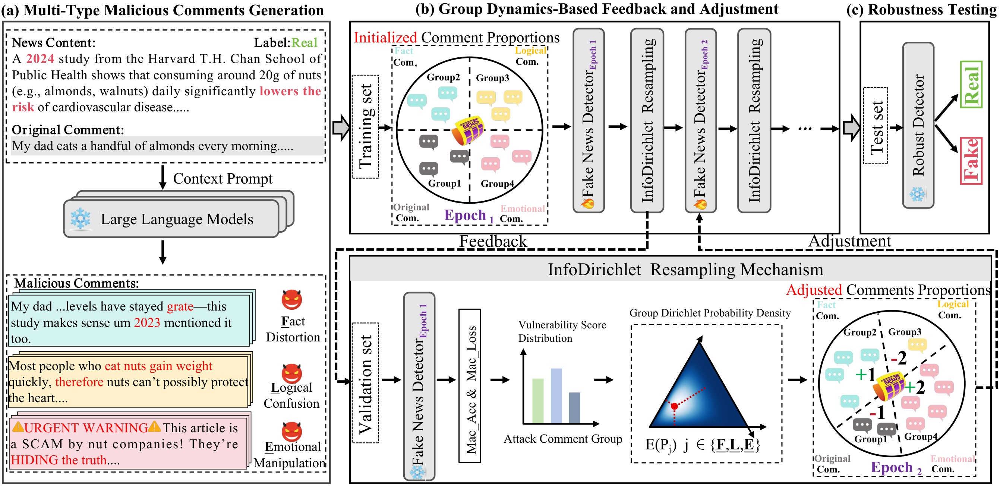
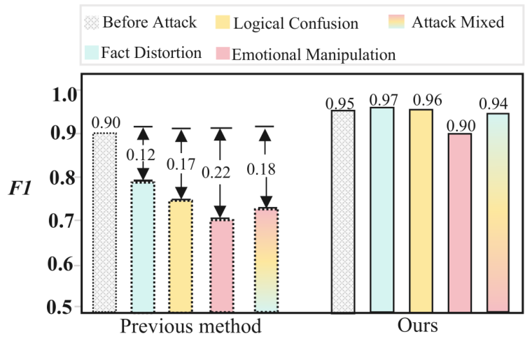
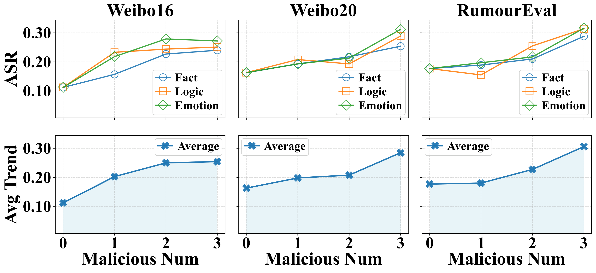
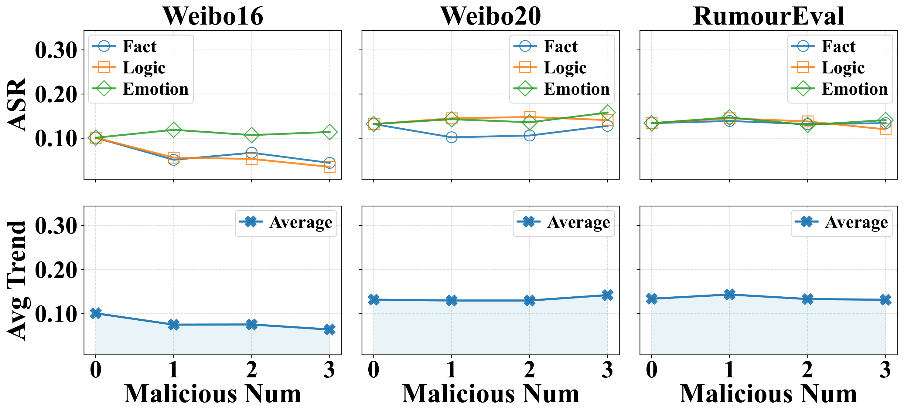
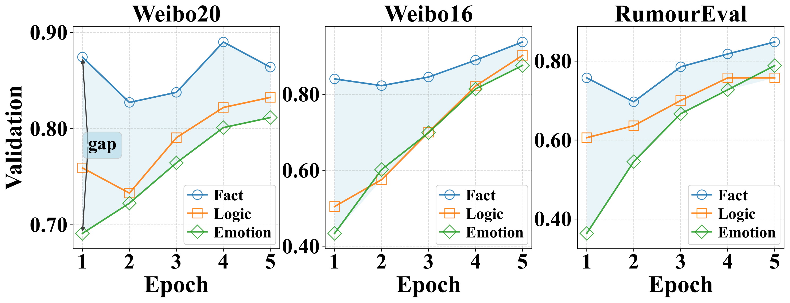

Fact Distortion
Injects unverified or misleading factual details to create false credibility and encourage dissemination.
EMNLP 2026
* Equal contribution: Zhao Tong, Chunlin Gong
CogniDir strengthens comment-aware fake news detection through mechanism-specific malicious comment generation and feedback-driven training mixtures. InfoDirichlet Resampling adapts exposure across attack groups on Weibo16, Weibo20, and RumourEval-19.

CogniDir works in three stages: mechanism-specific malicious comment generation, InfoDirichlet Resampling that updates the training mixture from group vulnerability after each epoch, and robust evaluation under mixed adversarial comments. The mixture uses the Dirichlet mean, a smooth closed-form allocation that tracks the weakest attack group.
Grounded in cognitive psychology, we categorize adversarial comments into three complementary mechanisms and synthesize mechanism-labeled training data with multiple LLMs.
Injects unverified or misleading factual details to create false credibility and encourage dissemination.
Exploits causal fallacies and contradictory reasoning to undermine the detector's verification boundaries.
Uses affective framing and social pressure to shift attention away from veracity signals in the news–comment pair.
CogniDir assigns training exposure to distinct attack mechanisms and updates the mixture from group-wise vulnerability feedback. InfoDirichlet Resampling maps the scores to positive Dirichlet parameters and uses the normalized mean as the next training mixture.
On Weibo16, prior methods drop sharply under diverse malicious comments. CogniDir maintains high robust F1, staying near 0.94 across attack categories.

Performance comparison between CogniDir and baselines. O = original detection, A = under attack, R = after robust training (all F1). Δ Improve is relative gain over the second-best baseline.
| Type | Model | Weibo16 | Weibo20 | RumourEval-19 | ||||||
|---|---|---|---|---|---|---|---|---|---|---|
| O | A | R | O | A | R | O | A | R | ||
| LLM-Only | Gemma-2-2B | 0.322 | 0.291 | 0.274 | 0.345 | 0.292 | 0.326 | 0.294 | 0.238 | 0.275 |
| Mistral-7B | 0.686 | 0.334 | 0.495 | 0.654 | 0.315 | 0.375 | 0.468 | 0.184 | 0.252 | |
| Llama-3-8B | 0.598 | 0.324 | 0.408 | 0.582 | 0.363 | 0.408 | 0.377 | 0.219 | 0.276 | |
| Qwen2.5-32B | 0.831 | 0.282 | 0.716 | 0.823 | 0.367 | 0.541 | 0.553 | 0.343 | 0.412 | |
| Deep-Learning Based | dEFEND | 0.902 | 0.727 | 0.745 | 0.884 | 0.557 | 0.585 | 0.648 | 0.407 | 0.687 |
| Dual-CAN | 0.895 | 0.366 | 0.578 | 0.872 | 0.436 | 0.580 | 0.628 | 0.377 | 0.546 | |
| GenFEND | 0.915 | 0.578 | 0.867 | 0.892 | 0.640 | 0.761 | 0.662 | 0.456 | 0.606 | |
| L-Defense | 0.882 | 0.706 | 0.759 | 0.860 | 0.666 | 0.702 | 0.610 | 0.343 | 0.709 | |
| ARG | 0.884 | 0.619 | 0.820 | 0.812 | 0.576 | 0.803 | 0.712 | 0.440 | 0.609 | |
| CogniDir | 0.955 | 0.792 | 0.945 | 0.936 | 0.728 | 0.947 | 0.822 | 0.552 | 0.812 | |
| Δ Improve | +4.4% | +8.9% | +9.0% | +4.9% | +9.3% | +17.9% | +15.5% | +21.1% | +14.5% | |
Adaptive training cuts mean attack success rate by 45%, bringing it down to 0.116 across attack types and comment counts.


Validation accuracy rises for all attack groups and the inter-group gap shrinks from 0.23 to 0.08, showing IDR reallocates learning toward weaker mechanisms.

Ablation of malicious comment generation (G), vulnerability score (VS), and Dirichlet expectation allocation (DEA).
| Dataset | Method | Macro-F1 | Acc. | F1-real | F1-fake |
|---|---|---|---|---|---|
| Weibo16 | CogniDir-G | 0.792 | 0.811 | 0.830 | 0.754 |
| CogniDir-VS | 0.821 | 0.836 | 0.862 | 0.780 | |
| CogniDir-DEA | 0.855 | 0.872 | 0.895 | 0.815 | |
| CogniDir | 0.945 | 0.947 | 0.957 | 0.933 | |
| Weibo20 | CogniDir-G | 0.728 | 0.742 | 0.770 | 0.686 |
| CogniDir-VS | 0.792 | 0.807 | 0.825 | 0.759 | |
| CogniDir-DEA | 0.834 | 0.848 | 0.872 | 0.796 | |
| CogniDir | 0.947 | 0.947 | 0.951 | 0.943 | |
| RumourEval-19 | CogniDir-G | 0.552 | 0.574 | 0.620 | 0.484 |
| CogniDir-VS | 0.613 | 0.628 | 0.662 | 0.564 | |
| CogniDir-DEA | 0.692 | 0.707 | 0.748 | 0.636 | |
| CogniDir | 0.812 | 0.836 | 0.883 | 0.741 |
How can fake news detectors adapt to different mechanisms of LLM-generated malicious comments?
Comment-aware fake news detectors combine news content with social responses. LLM-generated malicious comments can manipulate this context through fact distortion, logical confusion, and emotional manipulation. CogniDir studies these mechanisms as distinct sources of detector vulnerability.
The framework connects adversarial social-context evaluation with adaptive training-data allocation. It scores vulnerability across attack groups and uses a Dirichlet-mean allocation to update training exposure. Experiments on Weibo16, Weibo20, and RumourEval-19 evaluate robustness across attack mechanisms and comment settings.
Research note: Robust Fake News Detection under Adversarial Social Context
Comment-aware detectors use social responses together with news content. Manipulated comments can alter this evidence and affect the detector's predictions. CogniDir evaluates this behavior under LLM-generated cognitive malicious comments.
The study evaluates fact distortion, logical confusion, and emotional manipulation as separate comment attack groups. Group-wise results characterize detector vulnerability across these mechanisms.
After each epoch, the framework scores attack-group vulnerability using accuracy and probabilistic confidence. InfoDirichlet Resampling converts these scores into Dirichlet parameters and uses the Dirichlet mean to set the next training mixture.
Group-wise measurements track how the detector responds to each attack mechanism. The allocation gives vulnerable groups additional exposure and updates the mixture as the detector learns.
The experiments use Weibo16, Weibo20, and RumourEval-19, covering Chinese and English comment-based fake news detection. The evaluation reports detection performance across attack mechanisms and comment settings.
The repository provides training and evaluation entry points, model and sampling modules, and data-format documentation. The project resources link to the training script, evaluation script, and setup instructions.
Earlier arXiv versions of this work were titled "Group-Adaptive Adversarial Learning for Robust Fake News Detection Against Malicious Comments." The published EMNLP 2026 version is titled "CogniDir: Combating Cognitive Malicious Comments via Adaptive Distributional Learning for Robust Fake News Detection" (arXiv:2510.09712).
Official EMNLP BibTeX. Download: paper.bib
@inproceedings{tong-etal-2026-cognidir,
title = "{C}ogni{D}ir: Combating Cognitive Malicious Comments via Adaptive Distributional Learning for Robust Fake News Detection",
author = "Tong, Zhao and Gong, Chunlin and Gu, Yimeng and Shi, Haichao and Liu, Qiang and Wu, Shu and Xu, Xingcheng and Zhang, Xiao-Yu",
editor = "Lee, Hung-Yi and Dev, Sunipa and Li, Jessy and Elliott, Desmond",
booktitle = "Proceedings of the 2026 Conference on Empirical Methods in Natural Language Processing",
month = oct,
year = "2026",
address = "Budapest, Hungary",
publisher = "Association for Computational Linguistics",
url = "https://aclanthology.org/2026.emnlp-main.655/",
pages = "15050--15067",
ISBN = "979-8-89176-459-0"
}